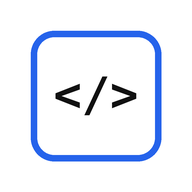

Change anything on your sites
Open any website folder on your PC, see it, and edit it.
This browser can't open folders. Open Dev mode in Microsoft Edge or Google Chrome on your laptop.
Pick the folder that has the site's index.html (for example Documents\GitHub\Ai-Tools). Your files stay on your PC.
Recent sites
📖 What you can do
- See your site exactly as it is in the folder, with 🖥 / 💻 / 📱 sizes.
- 🎯 Inspect (Ctrl + Shift + D): click anything on the page to select it.
- Change it yourself: text, colours, size, bold, spacing, links, pictures, or delete / duplicate it. It saves straight into the code.
- </> Code: jumps to the exact line in the file. Edit any file and press Ctrl + S.
- ↶ Undo: puts back the last save, one step at a time.
- 📝 Requests: write what you want Claude to do, then Copy all and paste it into Claude.
- Auto refresh: when Claude (or anything else) changes a file, the preview updates by itself.
- Nothing is published. Your public site only changes when you push with GitHub Desktop.
🎯 Click anything on the page to select it · Esc to stop
Pick a file on the left, or select something on the page and press </> Code.
Nothing selected.
Then click anything on the page.
Write what you'd like Claude to change. When you're ready, Copy all and paste it into Claude (Ctrl + V).